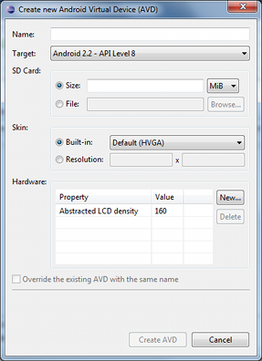

android tool. The android tool also offers
a command-line interface for creating and managing AVDs.Android Virtual Devices (AVDs) are configurations of emulator options that let you better model an actual device.
Each AVD is made up of:
You can create as many AVDs as you need, based on the types of devices you want to model and the Android platforms and external libraries you want to run your application on.
In addition to the options in an AVD configuration, you can also specify emulator command-line options at launch or by using the emulator console to change behaviors or characteristics at run time. For a complete reference of emulator options, please see the Emulator documentation.
The easiest way to create an AVD is to use the graphical AVD Manager, which
you can launch from Eclipse or from the command line using the
android tool. The android tool is provided in the
tools/ directory of the Android SDK. When you run the
android tool without options, it launches the graphical AVD
Manager.
For more information about how to work with AVDs from inside your development environment, see Developing in Eclipse with ADT or Developing in Other IDEs, as appropriate for your environment.
The Android SDK does not include any preconfigured AVDs, so you need to create an AVD before you can run any application in the emulator (even the Hello World application).
The easiest way to create an AVD is to use the graphical AVD Manager, but the
android tool also offers a command line option.
To create an AVD:
Alternatively, you can launch the graphical AVD Manager by running the
android tool with no options.
The Create New AVD dialog appears.
The target is the system image that you want to run on the emulator, from the set of platforms that are installed in your SDK environment. You can choose a version of the standard Android platform or an SDK add-on. For more information about how to add platforms to your SDK, see Adding SDK Components.
When you create a new AVD that uses a standard Android system image ("Type:
platform"), the AVD Manager
lets you set hardware emulation
options for your virtual device.
The table below lists the options available and the
default values, as well as the names of properties that store the emulated
hardware options in the AVD's configuration file (the config.ini file in the
AVD's local directory).
| Characteristic | Description | Property |
|---|---|---|
| Device ram size | The amount of physical RAM on the device, in megabytes. Default value is "96". | hw.ramSize |
| Touch-screen support | Whether there is a touch screen or not on the device. Default value is "yes". | hw.touchScreen |
| Trackball support | Whether there is a trackball on the device. Default value is "yes". | hw.trackBall |
| Keyboard support | Whether the device has a QWERTY keyboard. Default value is "yes". | hw.keyboard |
| DPad support | Whether the device has DPad keys. Default value is "yes". | hw.dPad |
| GSM modem support | Whether there is a GSM modem in the device. Default value is "yes". | hw.gsmModem |
| Camera support | Whether the device has a camera. Default value is "no". | hw.camera |
| Maximum horizontal camera pixels | Default value is "640". | hw.camera.maxHorizontalPixels |
| Maximum vertical camera pixels | Default value is "480". | hw.camera.maxVerticalPixels |
| GPS support | Whether there is a GPS in the device. Default value is "yes". | hw.gps |
| Battery support | Whether the device can run on a battery. Default value is "yes". | hw.battery |
| Accelerometer | Whether there is an accelerometer in the device. Default value is "yes". | hw.accelerometer |
| Audio recording support | Whether the device can record audio. Default value is "yes". | hw.audioInput |
| Audio playback support | Whether the device can play audio. Default value is "yes". | hw.audioOutput |
| SD Card support | Whether the device supports insertion/removal of virtual SD Cards. Default value is "yes". | hw.sdCard |
| Cache partition support | Whether we use a /cache partition on the device. Default value is "yes". | disk.cachePartition |
| Cache partition size | Default value is "66MB". | disk.cachePartition.size |
| Abstracted LCD density | Sets the generalized density characteristic used by the AVD's screen. Most skins come with a value (which you can modify), but if a skin doesn't provide its own value, the default is 160. | hw.lcd.density |
| Max VM application heap size | The maximum heap size a Dalvik application might allocate before being killed by the system. Value is in megabytes. Most skins come with a value (which you can modify), but if a skin doesn't provide its own value, the default is 16. | vm.heapSize |
When you create an AVD, the AVD Manager creates a dedicated directory for it on your development computer. The directory contains the AVD configuration file, the user data image and SD card image (if available), and any other files associated with the device. Note that the directory does not contain a system image — instead, the AVD configuration file contains a mapping to the system image, which it loads when the AVD is launched.
The AVD Manager also creates a <AVD name>.ini file for the
AVD at the root of the .android/avd directory on your computer. The file
specifies the location of the AVD directory and always remains at the root the
.android directory.
By default, the AVD Manager creates the AVD directory inside
~/.android/avd/ (on Linux/Mac), C:\Documents and
Settings\<user>\.android\ on Windows XP, and
C:\Users\<user>\.android\ on Windows Vista.
If you want to use a custom location for the AVD directory, you
can do so by using the -p <path> option when
you create the AVD (command line tool only):
android create avd -n my_android1.5 -t 2 -p path/to/my/avd
If the .android directory is hosted on a network drive, we recommend using
the -p option to place the AVD directory in another location.
The AVD's .ini file remains in the .android directory on the network
drive, regardless of the location of the AVD directory.
The sections below provide more information about how to manage AVDs once you've created them.
If you want to move or rename an AVD, you can do so using this command:
android move avd -n <name> [-<option> <value>] ...
The options for this command are listed in Command-line options for AVDs at the bottom of this page.
If you rename or move the root directory of a platform (or add-on), an AVD configured to use that platform will no longer be able to load the system image properly. To fix the AVD, use the Repair... button in the AVD Manager. From the command line, you can also use the android update avd command to recompute the path to the system images.
You can delete an AVD in the AVD Manager by selecting the AVD and clicking Delete.
Alternatively, you can use the android tool to delete an AVD. Here is the command usage:
android delete avd -n <name>
When you issue the command, the android tool looks for an AVD matching the
specified name deletes the AVD's directory and files.
You can use the android tool to create and manage AVDs.
The command line for creating an AVD has the following syntax:
android create avd -n <name> -t <targetID> [-<option> <value>] ...
Here's an example that creates an AVD with the name "my_android2.2" and target ID "3":
android create avd -n my_android2.2 -t 3
The table below lists the command-line options you can use with the
android tool.
| Action | Option | Description | Comments |
|---|---|---|---|
list avds |
List all known AVDs, with name, path, target, and skin. | ||
create avd |
-n <name> or |
The name for the AVD. | Required |
-t <targetID> |
Target ID of the system image to use with the new AVD. | Required. To obtain a list of available targets, use android list
targets. |
|
-c <path> or -c <size>[K|M] |
The path to the SD card image to use with this AVD or the size of a new SD card image to create for this AVD. | Examples: -c path/to/sdcard or -c 1000M |
|
-f |
Force creation of the AVD | By default, if the name of the AVD being created matches that of an
existing AVD, the android tool will not create the new AVD or overwrite
the existing AVD. If you specify the -f option, however, the
android tool will automatically overwrite any existing AVD that has the
same name as the new AVD. The files and data of the existing AVD are
deleted. |
|
-p <path> |
Path to the location at which to create the directory for this AVD's files. | ||
-s <name> or -s <width>-<height> |
The skin to use for this AVD, identified by name or dimensions. | The android tool scans for a matching skin by name or dimension in the
skins/ directory of the target referenced in the -t
<targetID> argument. Example: -s HVGA-L |
|
delete avd |
-n <name> |
Delete the specified AVD. | Required |
move avd |
-n <name> |
The name of the AVD to move. | Required |
-p <path> |
The path to the new location for the AVD. | ||
-r <new-name> |
Rename the AVD. | ||
update avds |
Recompute the paths to all system images. |
{kind=link}